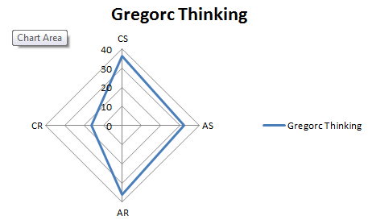
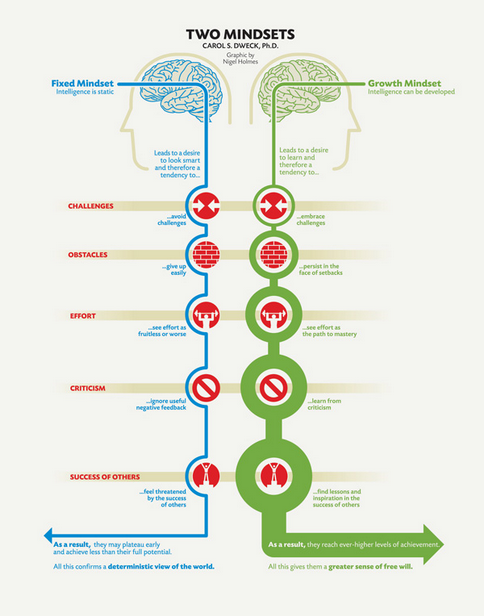

Blog Entries
Saturday 21 June 2014 Thinking! I'm a bit of a cynic! I've always staunchly avoided doing all the standard 'personality' and 'thinking' tests. I don't like the labelling and the consequences that such labelling can have on the person taking the test and those responding to them. So having to do this test as part of the EDA course has been a departure from my general approach. According to the Gregorc Thinking Style test I am a fairly even split between types. The only type I am clearly not is a 'concrete random'.  This would suggest that I have a wide range of learning techniques available to me. I should 'mix it up' a bit and dip into a variety of methods and resources to assist with my EDA learning. I have found that I need both access to others, in the form of experts (ie. teachers) and a wider learning group. The wider learning group gives both a validation to the issues and struggles we are all going through, and also gives tips and ideas for how to proceed. The low score in the 'concrete random' does support my experience so far in the course. I really struggled with the html/css work as I approached it from a 'trial and error' perspective and persisted with that too long. I should have hooked into other learning methods and gone back to reference material and expert help. Mind Sets! The work that Carol Dweck has done has implications for how we should all be approaching the Dev Bootcamp experience. The diagram included in the article (http://www.brainpickings.org/index.php/2014/01/29/carol-dweck-mindset/) really illustrates the ways that we can incorporate the growth mindset into our Eda experience.  As the diagram suggests, embracing challenges, persisting in the face of setbacks, seeing effort as the path to mastery, learning from criticism and finding lessons and inspiration in the success of others will assist us all with our current bootcamp experience. In practical terms this translates to remaining open and positive to our course work. Putting in the effort and challenging ourselves even when it feels overwhelming. Rejoice in the hardwork and engage and share with our cohort. Turn any critical feedback into a lesson and be inspired to achieve more!